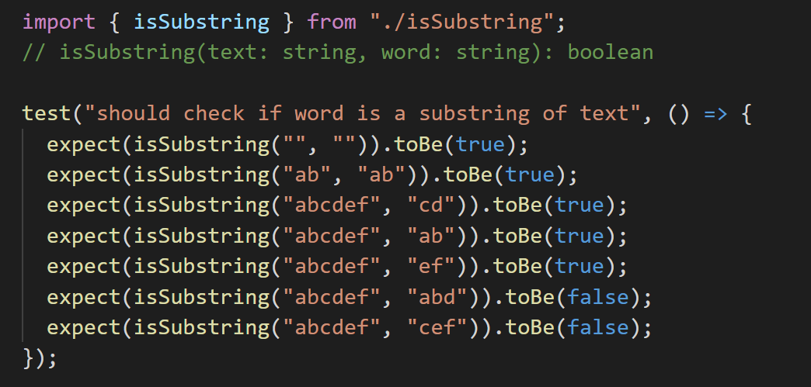
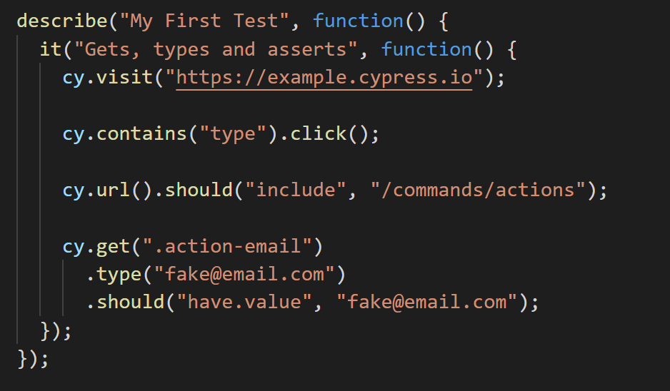
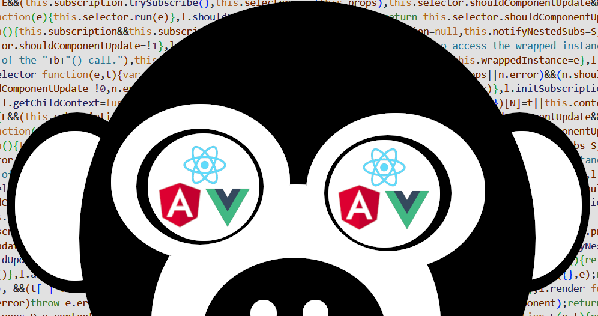

Detecting the unexpected in Web UI
Let's talk about race conditions
Nicolas DUBIEN
React-Europe
One day, it happened…

Race condition?
A race condition […] is the condition […] where the system's substantive behavior is dependent on the sequence or timing of other uncontrollable events.
🤔 What about user inputs, API calls…?
Unit test
E2E test
Are we sure to cover everything?
Yes, all my users are happy
Yes, I have 100% coverage

100% coverage
Not enough…

Nicolas DUBIEN

 dubzzz
dubzzz
 ndubien
ndubien
Our issue?
Limited scope of inputs covered
import { isSubstring } from "./isSubstring";
// isSubstring(text: string, word: string): boolean
test("should check if word is a substring of text", () => {
expect(isSubstring("", "")).toBe(true);
expect(isSubstring("ab", "ab")).toBe(true);
expect(isSubstring("abcdef", "cd")).toBe(true);
expect(isSubstring("abcdef", "ab")).toBe(true);
expect(isSubstring("abcdef", "ef")).toBe(true);
expect(isSubstring("abcdef", "abd")).toBe(false);
expect(isSubstring("abcdef", "cef")).toBe(false);
});
import { isSubstring } from "./isSubstring";
// isSubstring(text: string, word: string): boolean
test("should check if word is a substring of text", () => {
expect(isSubstring("", "")).toBe(true);
expect(isSubstring("ab", "ab")).toBe(true);
expect(isSubstring("abcdef", "cd")).toBe(true);
expect(isSubstring("abcdef", "ab")).toBe(true);
expect(isSubstring("abcdef", "ef")).toBe(true);
});
import { isSubstring } from "./isSubstring";
// isSubstring(text: string, word: string): boolean
test("should check if word is a substring of text", () => {
expect(isSubstring("" + "" + "", "")).toBe(true);
expect(isSubstring("" + "ab" + "", "ab")).toBe(true);
expect(isSubstring("ab" + "cd" + "ef", "cd")).toBe(true);
expect(isSubstring("" + "ab" + "cdef", "ab")).toBe(true);
expect(isSubstring("abcd" + "ef" + "", "ef")).toBe(true);
});
import { isSubstring } from "./isSubstring";
// isSubstring(text: string, word: string): boolean
test("should check if word is a substring of text", () => {
expect(isSubstring( "" + "" + "" , "")).toBe(true);
expect(isSubstring( "" + "ab" + "" , "ab")).toBe(true);
expect(isSubstring( "ab" + "cd" + "ef" , "cd")).toBe(true);
expect(isSubstring( "" + "ab" + "cdef", "ab")).toBe(true);
expect(isSubstring("abcd" + "ef" + "" , "ef")).toBe(true);
});
import { isSubstring } from "./isSubstring";
// isSubstring(text: string, word: string): boolean
test.each`
a | b | c
${""} | ${""} | ${""}
${""} | ${"ab"} | ${""}
${"ab"} | ${"cd"} | ${"ef"}
${""} | ${"ab"} | ${"cdef"}
${"abcd"} | ${"ef"} | ${""}
`("should check if word is a substring of text", ({a, b, c}) => {
expect(isSubstring(a + b + c, b)).toBe(true);
});
for all a, b, c strings
b is a substring of
a + b + c
"aze"
a
+
"rt"
b
+
"y"
c
Going random…
But reproducible way
Not deterministic
Wait a minute… 😓
Random?
What if the reported error is:
".D0xjkFI{<:nx#U3lI~", "j>~&]&/'0Fw{?O"
[983 characters], [1302 characters]
🔙 Back to race conditions
With a simple autocomplete field in React

What can go wrong with it?
A race condition […] is the condition […] where the system's substantive behavior is dependent on the sequence or timing of other uncontrollable events.
Our uncontrolled events:
- Interactions with the user
- Network delays

Questions?
 fast-check
dubzzz
ndubien
fast-check
dubzzz
ndubien
